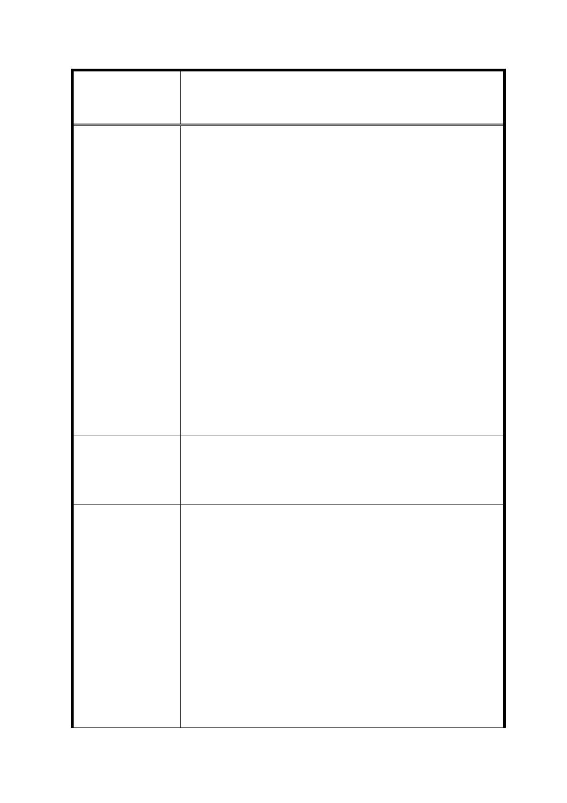

修訂臺北市信義計畫地區細部計畫（第三次通盤
案 名 檢討）案
建議辦法
市府回覆意見
3.紐約市劇院特定區案例：時代廣場西側之艾斯特旅館原址原
擬興建新辦公大樓，但該區之規劃委員會要求開發者應興建
新劇院。後為填補開發者因此而增加之興建費用，委員會同
意增加20%之樓地板面積，以做為開發者對應之補償。
七、 承前，本公司為重建該展演空間，並維持其軟硬體品質，
將負擔下列鉅額之成本支出，就相關損失，本公司應受到
合理之補償且該展演空間應不計入法定容積亦不計建蔽
率：
(1)建造展演空間之建築成本；
(2)為配合展演空間之建置，本公司對該展演空間所定著
之土地之商業利用的機會成本將受限縮；
(3)為滿足藝文展演對展演空間品質之要求，本公司將須
支出相當費用以採購高品質之專業設備；
(4)為維持展演空間之環境與設備水準，將長期產生維護
成本；及
(5)為使展演場地發揮其藝文效能，能為藝文團體有效利
用，本公司亦須另外投入經營成本，以作為該場地能
長期運作之經營基金。
綜上，懇請貴府刪除「本區第三次通盤檢討案」及「修訂本區
使用分區管制要點」第二十三點之修訂內容，切莫違法限制本
公司就新舞臺之處分權，俾免衍生法律爭議；倘貴府認定新舞
臺為文化景觀時，則應給予本公司合理之補償。
1. 本次通盤檢討係依 102 年 8 月 15 日｢臺北市文化資產審議委
員會第 51 次會議｣結論認為新舞臺有文化景觀價值，故配合
預為納入本次通盤檢討中。復經該委員會 102 年 12 月 30 日
第 54 次會議決議登錄「新舞臺」為本市文化景觀，並附帶
決議｢於新舞臺所在基地維持原表演空間機能，未來使用如
有變更，需提送臺北市文化資產審議委員會審議｣，故配合
修訂計畫內容，以維該文化景觀。
2. 又本案係屬通盤檢討，並非針對個案所為之變更，尚無陳情
人所指之針對性處分。
3. 本案僅依文化資產審議委員會附帶決議規定新舞臺所在基
地維持原表演空間機能，並未規定須重新建築，且無論重建
與否，依目前提送都市計畫委員會審議方案，倘該展演空間
無償捐贈予本府，得不計入容積樓地板面積，並無減損新舞
27